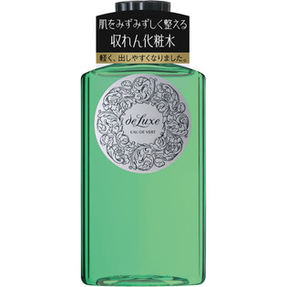

返回列表
产品名称：ドルックス オーデュベールN

資生堂 ドルックス オーデュベールN １５０ｍｌ
メーカー 資生堂
JANコード 4901872241286
商品の特徴
日やけ、雪やけ後の肌を整え、ひきしめる収れん化粧水
○肌をみずみずしくととのえます。
○すっきりとした感触で水分を補い、肌をひきしめます。
成分・分量
-
用法及び用量
＜使用方法＞
●乳液のあと、手のひらまたはコットンにティースプーン2／3杯をとり、軽くたたくようにして肌になじませます。
＊日やけ後は、肌の赤みやひりつきがおさまってからお使いください。